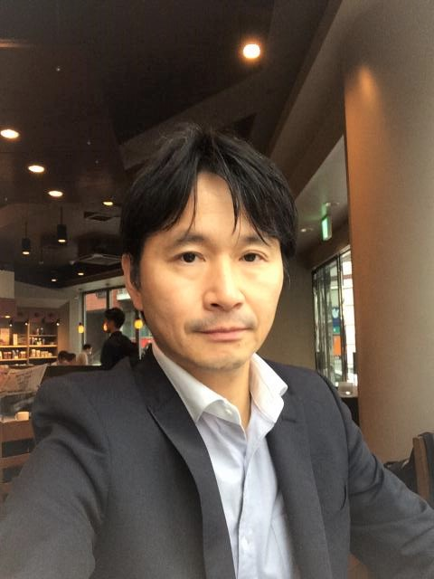
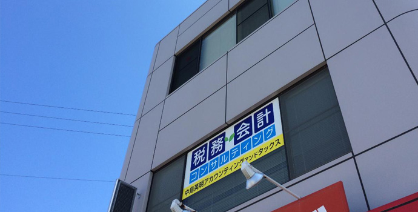
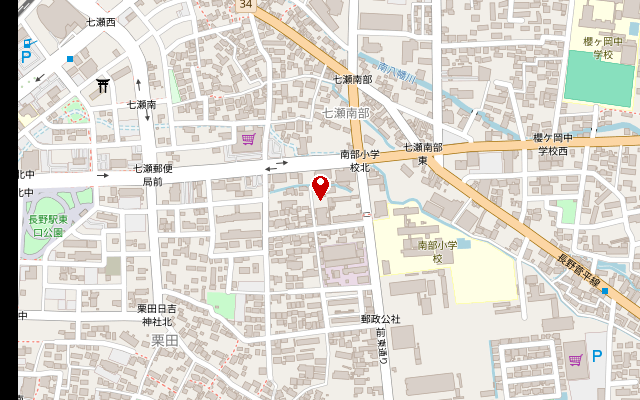

決算申告業務
法令に準拠した決算書の作成、可能な限り節税策を提案した上での申告書を作成致します。
いつでもお気軽にご相談ください。
税務サービス、会計サービス、アドバイザリーサービスを通して、お客様のニーズにあわせてたご提案を行うことで、社会に貢献したいと考えております。どんな些細なことでも、ご相談下さい。
お電話でのお問合せ 026-217-8308
5つの会計事務所が合併して誕生した、地域に根ざす税理士法人です。「あい」を音速の速さでお伝えします。
2020年6月、西山会計事務所、北村会計事務所、熊井会計事務所、鈴木会計事務所、中島アカウンティングの合併により誕生しました。「アイ」は愛情・Information・Individual・Inspire、「ソニック」は音速で伝えること。私たちのいろいろな"あい"を、素早くお客様にお伝えする税理士法人をめざします。
3つのサービスを通して、お客様のニーズに合わせたご提案を行い、社会に貢献したいと考えております。どんな些細なことでも、お気軽にご相談ください。
2020年6月 公認会計士／税理士 中島英明
事務所の経営理念について

この会計事務所という業務を通じて今この国に不足していると思われる「信義・寛容」の確立にたとえ僅かであっても足跡を残せたら、、、、、と常々思っております。
また地域の発展を考えるならば、その地域にお金が入ってこなければ地域の発展はきわめて不可能です。そのような意味でも、全国に世界に物を売る事ができる企業の存在がきわめて重要ではないでしょうか？当事務所としましても、殊に物作りを指向している企業の業容拡大のバックアップをして行きたい思っております。
ＴＫＣ全国会の基本理念である「自利利他」について、ＴＫＣ全国会創設者飯塚毅は次のように述べています。
大乗仏教の経論には「自利利他」の語が実に頻繁に登場する。解釈にも諸説がある。その中で私は「自利とは利他をいう」（最澄伝教大師伝）と解するのが最も正しいと信ずる。
仏教哲学の精髄は「相即の論理」である。般若心経は「色即是空」と説くが、それは「色」を滅して「空」に至るのではなく、「色そのままに空」であるという真理を表現している。
同様に「自利とは利他をいう」とは、「利他」のまっただ中で「自利」を覚知すること、すなわち「自利即利他」の意味である。他の説のごとく「自利と、利他と」といった並列の関係ではない。
そう解すれば自利の「自」は、単に想念としての自己を指すものではないことが分かるだろう。それは己の主体、すなわち主人公である。
また、利他の「他」もただ他者の意ではない。己の五体はもちろん、眼耳鼻舌身意の「意」さえ含む一切の客体をいう。
世のため人のため、つまり会計人なら、職員や関与先、社会のために精進努力の生活に徹すること、それがそのまま自利すなわち本当の自分の喜びであり幸福なのだ。
そのような心境に立ち至り、かかる本物の人物となって社会と大衆に奉仕することができれば、人は心からの生き甲斐を感じるはずである。
毎月、会計専門家が貴社を訪問し、次の業務を支援します。
お客様の繁栄は、私たちの喜びです。
ご発展の秘訣は良きアドバイザーに巡り会うことと自負しております。
私たちは最善のノウハウによって、お客様の成長を積極的にサポートいたします。
法令に準拠した決算書の作成、可能な限り節税策を提案した上での申告書を作成致します。
各種税務に関する相談はもちろん、経営上のお悩み等お気軽にご相談下さい。必要に応じて当事務所が提携している専門家もご紹介致します。
パソコンが普及した現在、会計ソフトの導入は以前と比べかなり容易にできるようになりました。経理業務のＯＡ化は自社のスピーディーな経営判断に大きく貢献します。会計ソフトのご提案から、導入後の操作方法等のアドバイスまでトータルにサポート致します。
個人や会社で所有する不動産等を国税庁が定めた財産評価基本通達に基づいて評価します。決算書上の不動産等は取得時の価額で表示されているため、現在の時価と乖離している場合、財産評価上の自社の株価が想像以上に高くなる場合があります。自社株の後継者への譲渡をお考えの方は、定期的に会社の財産評価を行うことをお勧め致します。
黒字経営を実現、継続していくための予算作成、資金繰り計画表の作成等をご支援致します。

公認会計士・税理士 中島 英明アイソニック税理士法人 長野中央事務所
こんにちは。公認会計士・税理士の中島英明です。
これまで、私は、会計士として会計監査、税理士として税務申告に取り組んでまいりました。そして、この先も、また、同じ道を進んでいく覚悟でおります。
大切にしていることは、お客様とのコミュニケーションです。どのように会社を成長させたいのか、どうように資産を守るのか、お客様の問題をどう解決していけるのかを、いつも考えております。
千変万化のこの時代。世の中も、経済も、どんどん変わっていきます。私、そして、私どもの事務所は、それに対応し、それを追い越し、成長できる様に努力研鑽を重ねてまいります。
どうか宜しくお願い致します。
公認会計士（H21年7月登録 第23904号）
税理士（H25年9月登録 第125410号）
1級ファイナンシャルプランニング技能士（Ｆ10210068523）
1972年生まれ。立教大学大学院修了。長野税理士法人にて6年、新日本有限責任監査法人にて6年勤めた後に独立。2014年、中島英明アカウンティングタックスを設立。税務業務と、会計監査業務、双方に従事。
税理士法人時代は、法人税・所得税・相続税の申告、セミナー講師、論文執筆、保険商品の提案・相談業務、ファイナンシャルプランニング業務を行う。監査法人においては、国内監査部に所属し、上場企業・国内企業の会計監査業務を行う。
現在は、神奈川県大和市（田園都市線：中央林間駅）にて、中島英明公認会計士事務所。長野県長野市にて、アイソニック税理士法人 長野中央事務所を運営。法人の税務・会計業務に加え、相続税等の資産税業務、書籍執筆、セミナー活動など幅広く従事。
趣味は、ランニング、トレイルランニング。東京マラソン、つくばマラソン、湘南国際マラソン、チャレンジ富士五湖マラソン（100k）、ハセツネCUP（71.5k）などに出場。フルマラソンベストは、3時間18分。家族は、妻と娘2人。
執筆：立教大学大学院修士論文「課税ベースの選択についての理論的研究」（1998年）／長野税理会論叢vol.1「訴訟代理人制度について」（2000年）
著書：税務経理協会「士業・FP・保険外交員のための生命保険活用講座」（2015年）

| 所長名 | 中島 英明 |
|---|---|
| 所在地 | 長野市若里2－1－1 長野平成ビル2Ｆ |
| 電話番号 | 026-217-8308 |
| FAX番号 | 026-217-8309 |
| 業務内容 |
・税務・経理・財務・会計・決算に関する業務 ・独立、開業支援に関する業務 ・経営相談・コンサルティング |
| 所属 | 関東信越税理士会所属 |

Google マップで開く Map © OpenStreetMap contributors
私たちはお客様みなさんのお手伝いするための様々なセミナーを開催していきます。